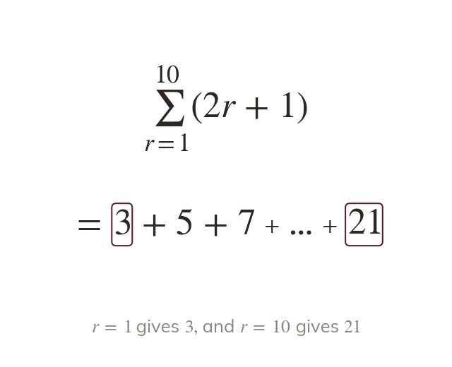
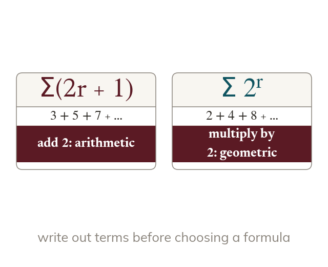
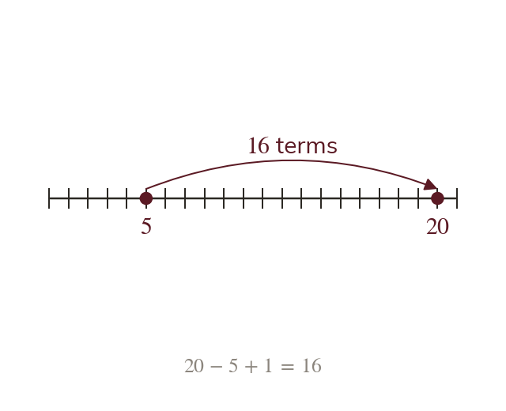
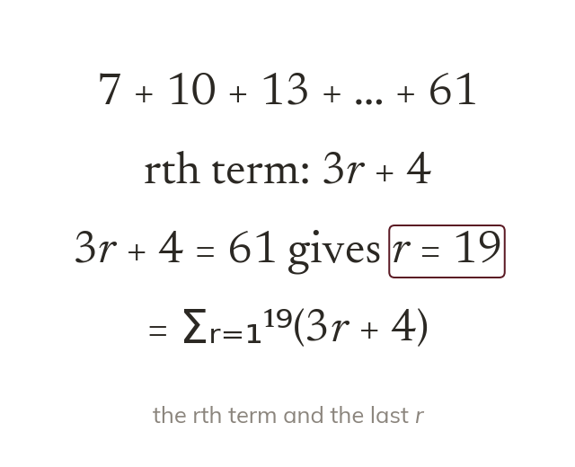
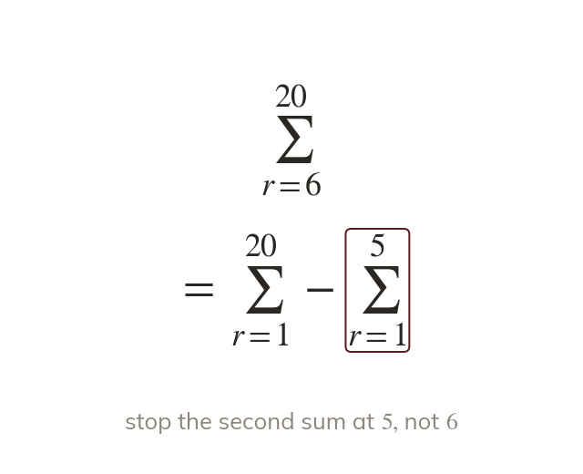
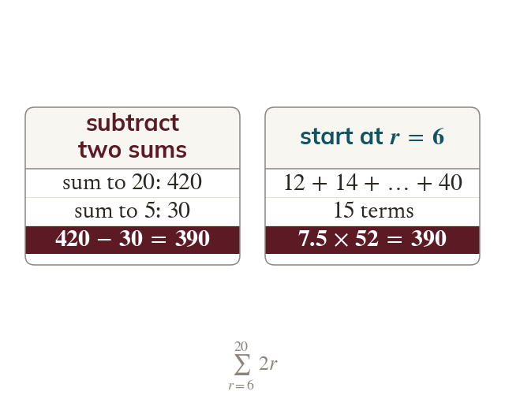

Σ means add them up
means put ..., into and add the results. The under the Σ is where to start, and the above it is where to stop.
Sigma notation writes a long sum in one short line, and the exam uses it for arithmetic and geometric series alike. Writing out the first few terms shows which formula to use; recurrence relations in then build a sequence term by term instead.
Work down the page at your own pace. Write every answer in your book first, then click to check it.
Read each card, then follow the worked examples one step at a time.

means put ..., into and add the results. The under the Σ is where to start, and the above it is where to stop.

The first few terms show what kind of series it is. Σ is arithmetic, and Σ is geometric.

From to there are terms, but from to there are
The count is the top limit minus the bottom limit, plus
Pick an answer. If it's wrong, the feedback tells you which mistake it was.
Write the blanks in your book first, then tap each one to check.
Read each card, then follow the worked examples one step at a time.

To write in sigma notation, find its rth term,
Then gives the top limit,

A sum from to is the sum to minus the sum to
The second sum stops one before the new start.

For the first term is and there are terms. Both routes give the same answer.
Pick an answer. If it's wrong, the feedback tells you which mistake it was.
Write the blanks in your book first, then tap each one to check.
Finished? Next lesson: 13.P3.7 Recurrence Relations and Types of Sequence.
For each skill, tap the one that is true for you today. Your Revise pages start with anything you mark Not yet.
Your ratings are saved on this device only.
Log in, then search for a code to practise that skill.